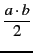
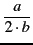

:; et on valide avec "Entrée".
On peut éditer plusieurs commandes à la file avant leur exécution
à condition de les séparer par un point-virgule.
Au début, de nombreuses erreurs proviennent d'une
mauvaise traduction des mathématiques : Xcas ne peut pas les comprendre
telles que vous les écrivez. Votre clavier vous
permet de taper ax2 + bx + c, mais votre ordinateur ne peut pas
comprendre que vous souhaitez élever x au carré, le multiplier
par a, etc... Vous devez spécifier chaque opération, et la
syntaxe correcte est a*x^2+b*x+c.
La multiplication doit être notée par une étoile
dans les commandes, mais est notée par un point dans
les réponses. Nous insistons sur le fait que pour Xcas,
ax est une
variable dont le nom comporte deux lettres, et pas le produit de a
par x.
| Opérations | |
+ |
addition |
- |
soustraction |
* |
mutiplication |
/ |
division |
^ |
puissance |
Modulo quelques précautions, l'écriture des formules est assez directe. Les parenthèses ont le sens usuel pour spécifier l'ordre des opérations. Les crochets sont réservés aux listes et aux indices. Les priorités entre opérations sont standard (la multiplication est prioritaire sur l'addition, la puissance sur la multiplication). Par exemple :
2*a+b retourne
2 . a + b
a/2*b retourne

a/2/b retourne
normal(a/2/b) retourne

a^2*b retourne
a2 . b
Les commandes sont numérotées, ainsi que les réponses,
mais, si vous avez modifié une ligne de commande, celle-ci
garde le numéro qu'elle avait. On peut rappeler par ans() (answer) la
réponse précédente c'est à dire la réponse de la dernière commande
évaluée.